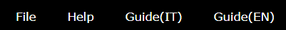

Introduzione
L'applicazione consente di esaminare modelli realizzati con il software XCModel; alcuni modelli sono liberamente scaricabili dalla pagina del progetto XCModel.

Nell'esempio, viene visualizzato il modello Mrpotato, scaricabile sia in formato IGES che XCModel OBJ.
Interfaccia grafica
L'interfaccia grafica offre numerose possibilità di interazione da parte dell'utente. Comprende:
1. Barra dei menù
Componente fisso dell'interfaccia, occupa la parte superiore sinistra della finestra. Offre tre menù, File, Help e Guide:
File
Selezione del modello.

Selezione dei file .db, .dbe del modello Mrpotato
sei modelli di default dell'applicazione- o caricando personalmente un file in formato
IGES oXCModel
Le estensioni supportate sono esclusivamente:
.igs (IGES),.db ,.dbe (XCModel).
Come scaricare un modello


Andando nella sezione
- Aircraft
- Animal
- Bathroom
- Boat
- Character
- Furniture
- Kitchen
- Lamp
- Music
- Other
- Plants
- Vase
- Vehicle
Nell'esempio, viene scaricato il modello Mrpotato, dalla categoria Character. Per ogni modello, è visibile:
- il numero di superfici che compone il modello (29)
- il numero di superfici trimmed (4)
- il numero totale di control points (951)
Selezionando

La cartella estratta contenente i file .obj, .db e .dbe

Estratto del file Mrpotato.obj
All'interno della cartella estratta, è visibile un file .obj: il file è un documento testuale
che elenca i file
-
Un file
.db -
Un file
.dbe
- il software XCModel consente la gestione di superfici NURBS trimmed generiche: la regione del dominio parametrico può essere definita da curve 2D NURBS generiche, mentre
-
l'applicazione web è in grado di caricare e visualizzare correttamente solo file
.dbe in cui la regione del dominio parametrico è definita da segmenti retti in corrispondenza della partizione nodale della superficie NURBS.
Help
Il menù di Help apre una finestra a schermo che elenca i tasti rapidi da tastiera per eseguire le funzioni.

Guide
Il pulsante Guide consente di aprire la presente guida.
2. Barra degli strumenti
La barra degli strumenti occupa la parte sinistra della finestra. Può essere visualizzata o nascosta:
- selezionando l'icona formata da tree linee orizzontali

- se si sta visualizzando un modello 3D nella scena, anche usando il tasto
T da tastiera
I cinque strumenti sono attivabili sia da tastiera che da click del mouse.
-
Lock light source : -
Hue shift : -
Fixed camera :LookingAt) si avrà un cambiamento nella prospettiva della scena. È possibile spostare il focus su diverse aree della scena, mantenendo sempre la stessa posizione della fotocamera. -
Touch selection :
-
Debug :Camera: la posizione della camera. Può essere fissata disattivandoFixed camera , come indicato dalle notazioni a schermoCamera: freeeCamera: boundLight source: la posizione della sorgente luminosa.-
Se
Lock light source è attivato, la fonte luminosa è in una posizione fissa e indipendente da quella della camera, -
se
Lock light source non è attivato ma la camera è fissa, la luce rimane comunque nella stessa posizione - solo nel caso in cui sia la camera che la luce siano libere, le loro posizioni e direzioni coincidono
-
Se
Looking at: indica il punto di vista della camera. Quando la camera è libera (Camera: free) è fisso in0.00 / 0.00 / 0.00, mentre varia quando la camera è bloccataField of view: rappresenta l'ampiezza dell'angolo di visione della scena-
Direction: indica la direzione della camera. Al caricamento di un nuovo file, la camera mantiene la direzione precedente Render mode:solidowireframe. Può essere modificato dall'apposito comandoShader: riporta l'informazione sullo shader utilizzato. Nel caso sia applicata una texture sul modello, viene indicata nel campotexturefps: misura le prestazioni dell'applicazioneModel: il nome del modello (visualizzato solo per i file IGES o i modelli di default)Surfaces: indica il numero di superfici e quante sono visualizzate sul totaleBBoxeBBox Center: indicano le coordinate e il centro della bounding box del modello, visualizzabili selezionandoRender mode: wireframe
Visualizzazione di Mrpotato con informazioni di Debug

Shaders disponibili

Textures disponibili
L'applicazione offre anche la possibilità di visualizzare il modello con
cinque shaders : diffuse, phong_per_vertex, phong _per_fragment, blinn_phong e toonquattro textures : bricks, wood, metal e uv

Level of details e Field of view
Ulteriori parametri con cui si può interagire sono:
-
il
field of view , per modificare l'angolo di visione della scena da un minimo di 30 gradi ad un massimo di 120 -
il
livello di dettaglio del modello, in un range da 1 a 16

Render mode e Color mode
Infine, sono disponibili due diverse modalità di
SOLID , per la visualizzazione delle superficiWIREFRAME , che mostra anche la bounding box del modello
MODEL , in cui tutte le superfici hanno un unico coloreSURFACES , ogni superfice ha un colore diverso
Tassellazione e Livello di Dettaglio
La
Il
Esempi di Visualizzazione


{kind=link}
{kind=link}
{kind=link}
{kind=link}
{kind=link}
{kind=link}
{kind=link}
{kind=link}
3. Canvas
Il canvas 3D consente la visualizzazione della scena e occupa l'intera finestra, ridimensionandosi dinamicamente in base alle dimensioni dello schermo. Può essere navigato
-
da
tastiera (con i tasti rapidi riportati nel menù Help) -
utilizzando il
mouse : la rotella del mouse consente di avvicinare o allontanare la camera (ingrandendo o rimpicciolendo la scena) e, tenendola premuta, è possibile cambiare il punto di vista muovendo il mouse -
utlizzando dispositivi
touch
4. Lista delle superfici
La lista delle superfici che costituiscono la scena occupa la parte destra della finestra. Come per la barra degli strumenti, anche questa può essere visualizzata o nascosta:
- se si sta visualizzando un modello 3D nella scena, anche usando il tasto
E da tastiera - selezionando l'icona formata da tree linee orizzontali
Ogni superficie della lista può essere nascosta dalla visualizzazione tramite l'icona
 , che consente di mostrare o
nascondere la superficie. Inoltre, sono presenti due pulsanti:
, che consente di mostrare o
nascondere la superficie. Inoltre, sono presenti due pulsanti:
-
Show others -
Hide others